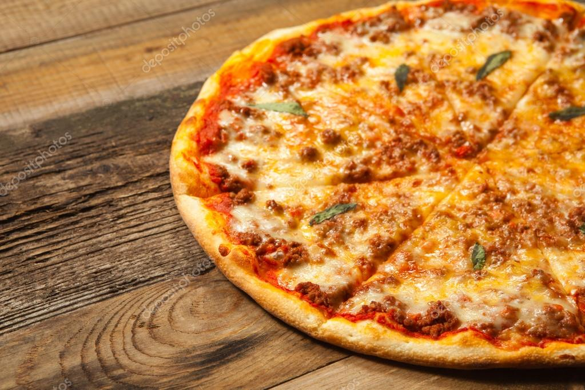

Pizza Bolognese

Description
Bolognese Pizza is not only a super quick recipe for homemade pizza, but it's also a great way to use leftover Bolognese sauce as an alternative to pairing it with pasta. It is made by spreading the Bolognese sauce on the pizza base and then topped with mozzarella and Parmigiano Reggiano. Bolognese sauce, also called Bolognese ragu, is traditionally prepared using minced meat and tomato puree as the main ingredients. This sauce is simmered for hours to develop the typical intense, rich and hearty taste. For this reason, normally when preparing Bolognese sauce, a large quantity is cooked and it can happen that there are leftovers. In order not to prepare the usual plate of pasta, we decided to put it on top of the pizza dough: and it works! The Bolognese pizza is rich and tasty with slices filled with ragù and melted cheese. So, if you have no idea what to do with leftover bolognese sauce, try this pizza recipe, it's so good you'll make the sauce just to taste it.
Bolognese sauce is also used to prepare Lasagne alla Bolognese. If you want to try other pizza topping, you may also like the classical pizza margherita, or neapolitan pizza without mozzarella cheese, Pizza Muffin, Pizza Croissants and Fig and prosciutto pizza. Give them all a try!
Ingredients:
For Pizza Dough:
- All-purpose flour 3 ½ cups (450 g)
- Water 1 cup (250 ml)
- Fresh brewer's yeast 0.3 oz (8.5 g)
- Salt 1 tsp (10 g)
- Extra virgin olive oil 1 tbsp (15 ml)
- Sugar ½ tsp (5 g)
For Topping:
-
Bolognese sauce 1 ½ cup (300 g)
-
Parmigiano Reggiano PDO cheese 2 tbsp (30 g) - grated
-
Basil - a few leaves
-
Mozzarella cheese 7 oz (250 g) - finely grated
-
Extra virgin olive oil 1 drizzle
Steps:
- In a cup, mix 1/4 cup warm water (taking it out of the total ingredients) with the crumbled yeast and sugar and let sit for a few minutes.
- In the meantime, sift the flour on a work surface, add the salt and make a hole in the centre.
- Start pouring the water and yeast mixture into the center of the flour, stirring with a spoon. Continue bringing the flour to the center gradually from the sides and always mixing.
- Add the remaining water (3/4 cup) and also the oil. Keep adding flour and mixing until everything is added.
- Now knead with your hands until you get a smooth and elastic dough.
- Form a ball and let it rest in a bowl covered with a tea towel until the dough has doubled in size (about 1.5 - 2 hours).
- Transfer the dough onto a floured surface, divide it into 2 parts (to obtain 2 medium pizzas) and roll out each piece of dough with a rolling pin in circles, about 0.5 cm thick.
- Place them on a baking sheet greased with olive oil.
- Place each pizza base on a baking tray greased with olive oil.
- Preheat the oven to 482°F (250°C), or your oven's maximum temperature. Pour a few spoonfuls of Bolognese sauce over the pizza base and use the back of the spoon to distribute in a not too thick layer
- Bake about 8 minutes until the pizza is golden around the edges.
-
Take the base out of the oven and put mozzarella cut into small pieces, grated Parmigiano Reggiano and a drizzle of extra virgin olive oil on top.
- Cook until the cheese is melted, about 5 minutes.
- Take the Bolognese pizza out of the oven, let it rest for a minute before removing it from the pan.
- Serve cut into slices on a chopping board or platter, garnished with more Parmigiano Reggiano and a few fresh basil leaves.
Other Recipes